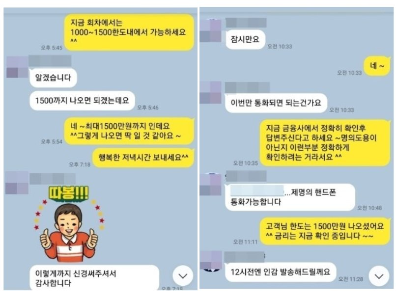

개인회생 직장인 대환 및 추가자금 승인사례 !!
안녕하세요~ 오늘은 제가 상담 진행해드린 양**고객님의 대출 사례를 안내해
드리겠습니다. 양** 고객님께서는 개인회생 중으로 4대보험이 가입되어 있는 직장인이셨으며,
월소득은 190만원 정도 되셨습니다. 고객님께서는 기존 대출 태강대부 1000만원 (금리24%)
이용 중이셔서 대환을 원하셨습니다. 저는 상담 후 기대출이 많지는 않지만 좀 더 낮은
금리뿐만 아니라 추가자금까지 한도가 나올 수 있는 금융사를 한 곳 선정하여
진행해 드렸고, 그 결과 태강대부 대환과 넉넉한 한도를 승인받아 고객님께서도 매우
만족해 하셨습니다. 아래는 저와 양**고객님의 카톡상담 내용 일부를 캡쳐한
것이오니, 참고하시어 많은 도움 되셨으면 좋겠습니다. 감사합니다.^^
